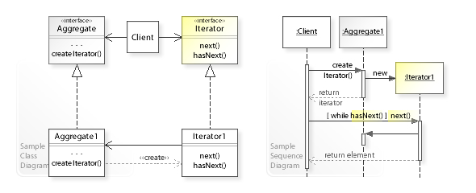
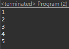
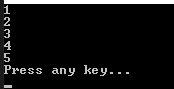

[Design pattern] 3-4. イテレータパターン(Iterator pattern)
こんにちは。明月です。
この投稿はデザインパターンのイテレータパターン(Iterator pattern)に関する説明です。
イテレータパターン(Iterator pattern)は我々がデザインパターンを知らない状況でもよく使うパターンです。C#にはlistをforeachで使うパターンだし、Javaにはfor(var x : list)の型でよく使うパターンです。
一般的に配列(Array)には当たり前にindexで配列を参照するのでイテレータパターンが意味がありませんが、連結リスト(LinkedList)なら話が違います。
get(100)を取得するためにはindex 0から100まで移動するので実際にforで使うことならすごく遅くなります。
例えば、0番目はリストの最初なので問題がありませんが、forの1になると0を参照して1番目を取得します。また、2になると0を参照して1に移動、2を取得します。3になると0を参照して1に移動、2に移動して3を取得します。
なのでイテレータパターンを利用して毎回に参照するたびにポインタを移動して探す必要がなしで現在の位置を格納して現在の値をリターン、そして次のポインタに移動する型のパターンが必要です。
実務ではこれを実装する必要がなしで、Listタイプはすべてイテレータパターンを継承しているのでforeachで使ったら自動にイテレータパターン(Iterator pattern)に変わるにで、ただこのパターンの内容だけ認知して応用して使うと良いでしょう。

#pragma once
#include <stdio.h>
#include <iostream>
#include<vector>
using namespace std;
// 実行関数
int main()
{
// ベクトルのインスタンス生成
vector<int> node;
// ベクトルに値を格納
for (int i = 0; i < 10; i++) {
node.push_back(i);
}
// イテレータパターンを利用してポインタを取得
for (vector<int>::iterator ptr = node.begin(); ptr < node.end(); ptr++) {
// コンソールに出力
cout << *ptr << endl;
}
return 0;
}
我々が実際にプログラムで使うイテレータパターンはforを利用して値のポインタを取得、一連の順番とおりに出力するパターンです。
実は私がC/C++でイテレータパターンを実装しようと思いましたが、難しいですね。C/C++を使うのも古くなったし、いざ実装するのが簡単ではありません。それでここではただイテレータパターンを使う方法だけ説明します。
もし、イテレータパターンを実装する人がいらっしゃいならお知らせてください。
import java.util.Iterator;
// iteratorパターンを使うためにIterableインターフェースを継承
class LinkedList<T> implements Iterable<T> {
// 連結リストアルゴリズムのためのインスタンスクラス
private class Node {
// リストに格納する値
T data;
// 連結リストの次のインスタンスポインタ
Node next;
}
// 連結リストの前のインスタンスポインタ
private Node first = null;
// 連結リストの後のインスタンスポインタ
private Node end = null;
// 値を追加する関数
public void add(T data) {
// インスタンス生成
Node ptr = new Node();
// データ設定
ptr.data = data;
// リストで値がない場合
if (first == null) {
// 連結リストの前後に設定
first = ptr;
end = ptr;
return;
}
// リストがあれば後に連結
end.next = ptr;
// 後のポインタ変更
end = ptr;
}
// Iteratorパターンのためのクラス、Iteratorインターフェース継承
private class Itr implements Iterator<T> {
// forから現在に出力するインスタンスポインタ変数
Node point;
// 次インスタンスがある可否
public boolean hasNext() {
// ポインタがなければfalse
return point != null;
}
// 現在の値をリターンしてポインタを移動
public T next() {
// リターンする値を取得
T ret = point.data;
// ポインタ移動
point = point.next;
// 値リターン
return ret;
}
}
// Iterableインターフェースの再定義関数
@Override
public Iterator<T> iterator() {
// Iteratorパターンのため、クラスのインスタンス生成
Itr itr = new Itr();
// 最初のインスタンス設定
itr.point = first;
// Iteratorパターンクラスのインスタンスリターン
return itr;
}
}
public class Program {
// 実行関数
public static void main(String[] args) {
// Iterableインターフェースを継承するクラスのインスタンスを生成
LinkedList<Integer> list = new LinkedList<>();
// 値のデータ入力
list.add(1);
list.add(2);
list.add(3);
list.add(4);
list.add(5);
// iterator関数を呼び出して、hasnextの値でtrue、falseを確認して値を出力する。
for (var data : list) {
// コンソールに出力
System.out.println(data);
}
}
}

上の例は簡単な連結リストのアルゴリズムです。
そして任意で連結リストのLinkedListクラスをforの繰り返し文にイテレータパターン(Iterator pattern)でデータが順番とおりに出力されることを確認できます。
つまり、forの繰り返し文にイテレータパターンを使いたいならIterableのインターフェースを継承したら良いです。
Iterableのインターフェースにはiterator関数を再定義しなければならないですが、iterator関数の返却値はIteratorのインターフェースの型です。
それなら、Iteratorのインターフェースを継承するItrクラスを生成してItrクラスはhasNext関数とnext関数を再定義しなければならないです。
つまり、forでイテレータパターンを使うならhasNext関数を呼び出して、値があるかどうかのtrue、falseの値を受け取って、trueならnext関数を呼び出します。
next関数には値をリターンを受け取りますが、次のポインタの位置に移動するべきに処理もしなければならないです。
そのように最後にhasNext関数からfalseの値が受け取るとfor文から抜け出します。
using System;
using System.Collections;
using System.Collections.Generic;
// iteratorパターンを使うためのIEnumerableインターフェースを継承する
public class LinkedList<T> : IEnumerable<T>
{
// 連結リストアルゴリズムのためのインスタンスクラス
class Node
{
// リストに格納する値
public T Data { get; set; }
// 連結リストの次のインスタンスポインタ
public Node Next { get; set; }
}
// 連結リストの前のインスタンスポインタ
private Node first = null;
// 連結リストの後のインスタンスポインタ
private Node end = null;
// 値を追加する関数
public void Add(T data)
{
// インスタンス生成
Node node = new Node() { Data = data };
// リストに値がない場合
if(first == null)
{
// 連結リストの前後に設定
first = node;
end = node;
return;
}
// リストがあれば後に連結
end.Next = node;
// 後のポインタ変更
end = node;
}
// Iteratorパターンのためのクラス、IEnumeratorインターフェースを継承する
class Enumerator : IEnumerator<T>
{
// Reset関数をためのリストの前の変数
private Node first;
// 現在の位置変数
private Node current;
// コンストラクタ
public Enumerator(Node first)
{
// メンバー変数設定
this.first = first;
this.current = first;
}
// 現在の位置値を返却
public T Current
{
get
{
// リターンの値を取得
T ret = current.Data;
// ポインタ移動
current = current.Next;
// 値をリターン
return ret;
}
}
// Currentの値と同一
object IEnumerator.Current => Current;
// foreachが終わる時に呼び出す。
public void Dispose()
{
// もし、リストを使う場合、つまり、IOやSocketが使う場合はコネクション終了する。
}
// 次、インスタンスがあるかの可否
public bool MoveNext()
{
// なければfalse、あればtrue
return current != null;
}
// Iteratorパターン初期化
public void Reset()
{
current = first;
}
}
// Iteratorパターンクラスのインスタンスリターン
public IEnumerator<T> GetEnumerator()
{
// インスタンス生成
return new Enumerator(first);
}
// GetEnumerator関数と同一
IEnumerator IEnumerable.GetEnumerator()
{
return GetEnumerator();
}
}
class Program
{
// 実行関数
static void Main(string[] args)
{
// 連結sリストのインスタンス生成
LinkedList<int> iter = new LinkedList<int>();
// 値を追加
iter.Add(1);
iter.Add(2);
iter.Add(3);
iter.Add(4);
iter.Add(5);
// MoveNext()を呼び出してtrueならCurrentを呼び出す。
// 結果は1, 2, 3, 4, 5
foreach (var data in iter)
{
// コンソールに出力
Console.WriteLine(data);
}
// 任意のキーを押してください
Console.WriteLine("Press any key...");
Console.ReadKey();
}
}

内容はJavaの例と同じです。
イテレータパターン(Iterator pattern)は我々がパターンを知っても知らなくてもよく使うパターンです。特に、大容量の値をQueueやLinkedListで使う場合によく使うパターンの中で一つです。
アルゴリズムの特性上にfor(int i=0;i<size;i++)の形式で実装したら二中探索になるので性能上で多い問題が発生することがあります。
そして仕様によりプログラム上でイテレータパターン(Iterator pattern)を実行しなければならないこともあります。
その場合は単純なLinkedListのFIFO式のアルゴリズムではなく、キャッシュアルゴリズムのLRU(Least Recently Used)やLFU(Least Frequency Used)で応用して使う場合もあるでしょう。
ここまでデザインパターンのイテレータパターン(Iterator pattern)に関する説明でした。
ご不明なところや間違いところがあればコメントしてください。
- [Design pattern] 3-6. ステートパターン(State pattern)2021/11/17 20:04:47
- [Design pattern] 3-5. メメントパターン(Memento pattern)2021/11/16 20:01:36
- [Design pattern] 3-4. イテレータパターン(Iterator pattern)2021/11/15 19:31:28
- [Design pattern] 3-3. コマンドパターン(Command pattern)2021/11/05 17:01:42
- [Design pattern] 3-2. 責任の連鎖パターン(Chain of responsibility pattern)2021/11/04 19:27:58
- [Design pattern] 3-1. ストラテジーパターン(Strategy pattern)2021/11/03 18:38:52
- [Design pattern] 2-7. ファサードパターン(Facade pattern)2021/11/02 19:32:31
- [Design pattern] 2-6. プロキシパターン(Proxy pattern)2021/11/01 19:42:44
- [Design pattern] 2-5. フライウェイトパターン(Flyweight pattern)2021/10/29 19:48:27
- [Design pattern] 2-4. デコレーターパターン(Decorator pattern)2021/10/28 20:11:13
- [CentOS] Redisデータベースをインストールする方法とコマンドを使い方2022/02/14 18:33:07
- [Design pattern] 3-6. ステートパターン(State pattern)2021/11/17 20:04:47
- [Design pattern] 3-5. メメントパターン(Memento pattern)2021/11/16 20:01:36
- [Design pattern] 3-4. イテレータパターン(Iterator pattern)2021/11/15 19:31:28
- [CentOS] Linux環境(CentOS)でCassandra(NoSQL DB)をインストールする方法(DBeaverブラウザでNoSQL使い方)2021/11/12 17:33:58
- [Design pattern] 3-3. コマンドパターン(Command pattern)2021/11/05 17:01:42
- [Window] apache-tomcatでロードバランシング(Load balancing)する方法とセッションクラスタリング（セッション共有）2021/11/05 16:58:45
- [Window] Apacheでmod_jkとmod_proxyの差異、apacheでtomcatのwebsocketのプロキシフォーワードする方法2021/11/05 16:55:05
- [PHP] Apache環境の同じホスト中でPHPとJava(Servlet)を同時に起動、運用する方法2021/11/05 16:52:04
- [C#] 61. ウィンドウフォーム(Window form)でスレッド(Thread)を使い方、クロススレッド問題解決2021/11/04 19:29:51
- [Design pattern] 3-2. 責任の連鎖パターン(Chain of responsibility pattern)2021/11/04 19:27:58
- [Design pattern] 3-1. ストラテジーパターン(Strategy pattern)2021/11/03 18:38:52
- [C#] 60. ウィンドウフォーム(Window form)のイベント設定する方法2021/11/02 21:18:08
- [Design pattern] 2-7. ファサードパターン(Facade pattern)2021/11/02 19:32:31
- [Design pattern] 2-6. プロキシパターン(Proxy pattern)2021/11/01 19:42:44